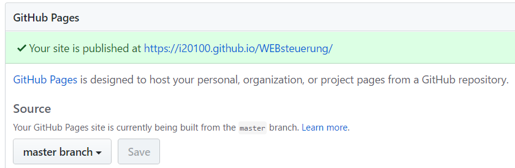

Die wichtigsten Erfahrungen und Erkenntnisse im Zusammenspiel mit GitHub Desktop, Atom & Windows10 beim erstellen einer Webpräsenz auf Git werden hier festgehalten. Das Dokument soll als Gedankenstütze und Nachschlagewerk dienen für die wichtigsten Anwendungsfälle.
Es empfiehlt sich einen Blick auf die Erklärungen des GitHub Flow zu werfen. Dort werden die Begriffe und das Standard vorgehen für das Bearbeiten von Git Daten im Team erläutert.
https://guides.github.com/introduction/flow/
Wei werden die lokalen Daten synchronisert?
Ablauf mit GitHub Desktop:
Sind lokale Git Dateien geändert worden (z.B. mit dem Texteditor Atom) wird dies in GitHub Desktop u.a. via dem Ritter Changes angezeigt. Damit die Änderungen synchronisiert werden können, muss zuerst ein Kommentar erfolgen.Sollen die Änderungen mit dem aktuellen Branch Mindestens das Summary muss einen Wert enthalten um das Kommit abzusetzen. Muss im GitHub Desktop der letzte Punkt im Verlauf angewählt werden. Dies entspricht dann der aktuellen Veränderung. Ist diese Ausgewählt kann unten links mindestens das Feld Summary ausgefüllt werden. Dannach kann mit dem Synch Knopf der commit hochgeladen werden.

Ein einfacher Weg ein html Projekt auf seine WEB Funktion hin zu testen, besteht darin dieses unter GitHub anzulegen und dieses als Webseite zu veröffentlichen.
Wie?
Einfach auf www.github.com eigenes Projekt öffnen und unter Settings > GitHub Pages das gewünschte veröffentlichen.
